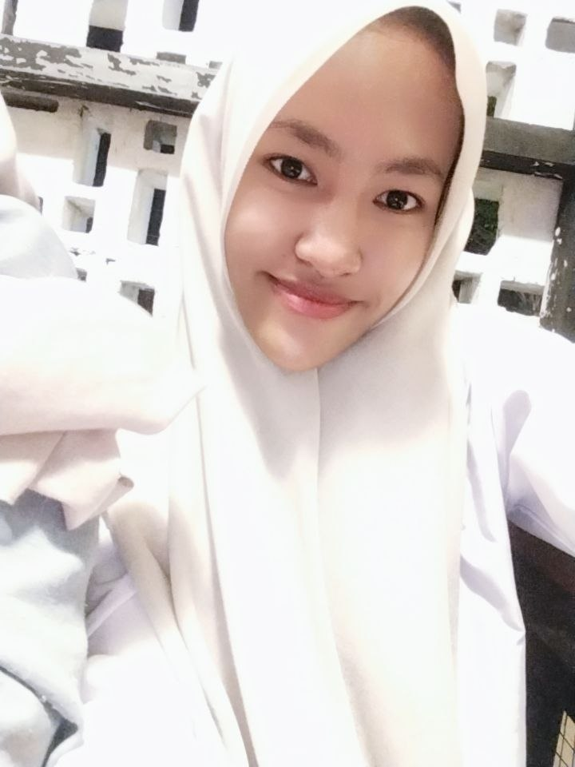
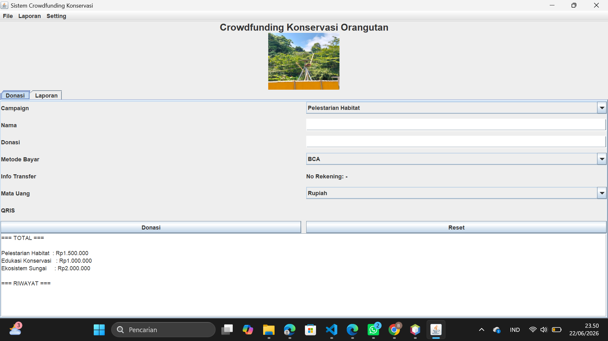
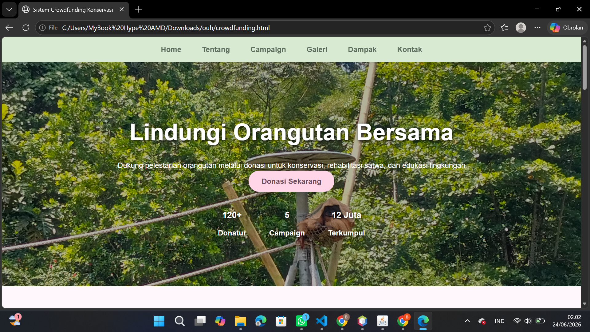

Saya merupakan mahasiswa Informatika yang memiliki minat dalam bidang teknologi dan pengembangan web. Melalui berbagai proses pembelajaran dan proyek yang dikerjakan, saya terus berusaha mengembangkan kemampuan serta menambah pengalaman di bidang tersebut.

Halo! Saya Isma Azikayla Ni'ma Lbs, mahasiswa S1 Informatika Universitas Satya Terra Bhinneka yang memiliki ketertarikan pada pengembangan website dan teknologi digital.
Saya senang mempelajari hal-hal baru dan terus mengembangkan kemampuan melalui perkuliahan, proyek, serta pembelajaran mandiri. Bagi saya, teknologi adalah sarana untuk menciptakan solusi yang bermanfaat dan memudahkan kehidupan sehari-hari.

Aplikasi desktop berbasis Java yang dikembangkan menggunakan NetBeans untuk membantu pengelolaan proses crowdfunding. Proyek ini dirancang dengan antarmuka yang sederhana agar pengguna dapat mengelola data secara lebih mudah dan efisien.

Website Crowdfunding Konservasi yang dikembangkan menggunakan HTML, CSS, dan JavaScript untuk mendukung kegiatan penggalangan dana bagi program konservasi lingkungan. Website ini dirancang dengan antarmuka yang sederhana dan responsif sehingga memudahkan pengguna dalam mengakses informasi serta mengelola proses donasi.